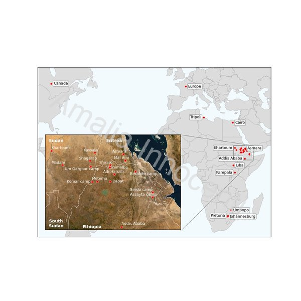
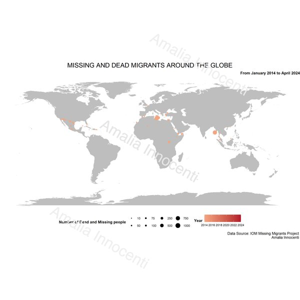

Projects

Clicca per vedere maggiori dettagli
Geographic Mapping of Displacement - Python & Natural Earth
This map was developed as an integral part of a research publication, contributing to the visual documentation of forced displacement and refugee camps in the Horn of Africa and beyond.
Methodology: Locations mentioned in the source document were converted into geographic coordinates using Google Maps, including a detailed identification of individual camp names within broader regional references such as "Afar camps" or "Tigray camps." The coordinates were compiled in an Excel file to ensure transparency and reproducibility. The map was built in Python using the Mercator projection and open-source geographic boundary data from Natural Earth, which represents borders according to de facto rather than de jure status. The visualisation includes both a world map and a zoomed view focused on the Horn of Africa. The modular structure of the code allows for rapid updates: adding new locations, adjusting colours, or switching the base map style requires minimal effort.

Clicca sull'immagine per vedere meglio l'animazione grafica realizzata in R
Missing and dead migrants around the globe
Data Visualisation and Analytics in R course — Vrije Universiteit Amsterdam, Master's Degree in Social and Cultural Anthropology
This project analyses global data on migrants who have died or gone missing as a result of border regimes, with a focus on identifying the most critical geographical areas and migration routes.
Data Source: The dataset was produced by the IOM (International Organisation for Migration) and covers the period 2014–2024, including cases such as deaths in the Mediterranean Sea and disappearances along the US-Mexico border. Data was retrieved directly from the IOM open data portal.
Methodology: The analysis was carried out in R. The data cleaning phase involved splitting a single coordinate variable into two separate numeric variables for longitude and latitude, and removing incomplete observations. Individual databases were then built for each geographical area to allow for more granular filtering by year and region. The results were presented through interactive visualisations that mapped the distribution of deaths and disappearances worldwide.
Il papa su Twitter: tra cyberteologia e secolarizzazione
Corso di Globalizzazione e culture politiche · Università degli Studi Milano-Bicocca · LM Analisi dei Processi Sociali · 2021/2022
Questo progetto analizza la comunicazione religiosa online attraverso lo studio del profilo Twitter ufficiale del Papa (@pontifex_it), esplorando il rapporto tra cyberteologia e secolarizzazione.
Metodologia: Tramite il software statistico Stata e il comando twitter2stata, sono stati estratti 3.200 tweet dall'account @pontifex_it, sfruttando le API di Twitter a livello Elevated. Dal corpus totale sono stati selezionati i tweet con il maggior e il minor numero di like e retweet, combinando un'analisi quantitativa con un approfondimento qualitativo dei contenuti più rilevanti.
L'analisi ha indagato quali temi religiosi ottengono maggiore consenso online e in che misura la logica della rete influenzi e condizioni la comunicazione dei contenuti religiosi, con particolare attenzione all'assenza di temi sensibili come l'aborto e l'eutanasia nei contenuti digitali.